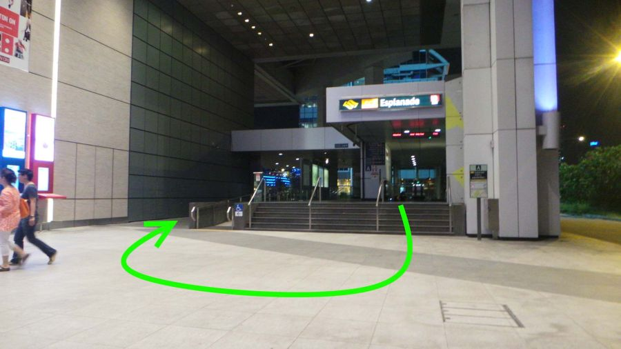

AFAのイベント会場はSuntec Convention Centre(サンテック展示場)です。
City Hall(シティホール)駅からは徒歩で約10分くらいになります。
Esplanade(エスプラネード)駅の出口A(案内図の⑩)からは徒歩で約5分くらいになります。
City Hall(シティホール)駅からの行き方：
①出口正面を右に曲がります ※右側にあるGuardian(薬局)のドリンク等を安く買えます
②道なりに進みます
⑦上りエスカレータに乗ります
⑧そのまままっすぐ進みます
ここでEsplanade(エスプラネード)駅の出口Aに繋がります：
⑩Esplanade(エスプラネード)駅の出口A
⑪上りエスカレータに乗って外へ
⑫出口から直ぐに右に回ります
⑬タクシースタンド(乗り場)とユニクロの横を進みます
⑭左に曲がります
⑮巨大スクリーン前にある上りエスカレータに乗ります
⑯右に曲がります
⑰チケットを持っているなら上に進みましょう！
※当日券の売り場情報はまだ発表されていません。 VIP、CAT2のライブチケットを持っている方はイベント入場チケットは必要ありません。